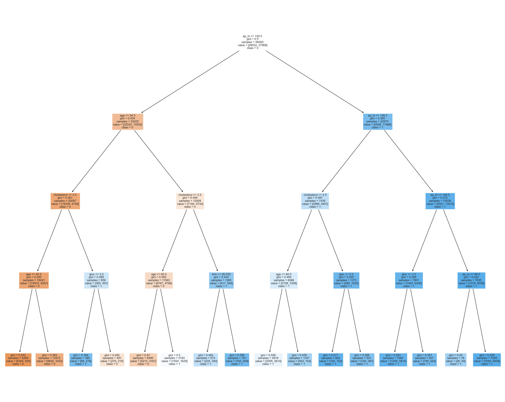

import pandas as pd
import seaborn as sns
import matplotlib.pyplot as plt
from sklearn import tree
from IPython.display import Image
import numpy as np
from sklearn.metrics import accuracy_score
from sklearn.metrics import precision_score
from sklearn.metrics import recall_scoreimport pandas as pd
cardio = pd.read_csv('../Data/01-modified-data/cardio.csv')
cardio['bmi'] = round(cardio['weight'] / ((cardio['height']/100) ** 2),2)
cardio.head()| id | age | gender | height | weight | ap_hi | ap_lo | cholesterol | gluc | smoke | alco | active | cardio | bmi | |
|---|---|---|---|---|---|---|---|---|---|---|---|---|---|---|
| 0 | 0 | 50 | 2 | 168 | 62 | 110 | 80 | 1 | 1 | 0 | 0 | 1 | 0 | 21.97 |
| 1 | 1 | 55 | 1 | 156 | 85 | 140 | 90 | 3 | 1 | 0 | 0 | 1 | 1 | 34.93 |
| 2 | 2 | 52 | 1 | 165 | 64 | 130 | 70 | 3 | 1 | 0 | 0 | 0 | 1 | 23.51 |
| 3 | 3 | 48 | 2 | 169 | 82 | 150 | 100 | 1 | 1 | 0 | 0 | 1 | 1 | 28.71 |
| 4 | 4 | 48 | 1 | 156 | 56 | 100 | 60 | 1 | 1 | 0 | 0 | 0 | 0 | 23.01 |
# LOOK AT FIRST ROW/Dataframe
print(cardio.iloc[0])id 0.00
age 50.00
gender 2.00
height 168.00
weight 62.00
ap_hi 110.00
ap_lo 80.00
cholesterol 1.00
gluc 1.00
smoke 0.00
alco 0.00
active 1.00
cardio 0.00
bmi 21.97
Name: 0, dtype: float64#PRINT THE FOLLOWING DATA-FRAME WHICH SUMMARIZES EACH COLUMN
summary_cardio = cardio.describe().T[['min', 'mean', 'max']]
summary_cardio['dtypes'] = cardio.dtypes
summary_cardio = summary_cardio[['dtypes', 'min', 'mean', 'max']]
summary_cardio| dtypes | min | mean | max | |
|---|---|---|---|---|
| id | int64 | 0.00 | 49947.926488 | 99999.00 |
| age | int64 | 30.00 | 53.278878 | 65.00 |
| gender | int64 | 1.00 | 1.348317 | 2.00 |
| height | int64 | 142.00 | 164.452952 | 187.00 |
| weight | int64 | 37.00 | 72.708283 | 109.00 |
| ap_hi | int64 | 85.00 | 125.447212 | 170.00 |
| ap_lo | int64 | 55.00 | 80.773617 | 106.00 |
| cholesterol | int64 | 1.00 | 1.349921 | 3.00 |
| gluc | int64 | 1.00 | 1.217434 | 3.00 |
| smoke | int64 | 0.00 | 0.086967 | 1.00 |
| alco | int64 | 0.00 | 0.052079 | 1.00 |
| active | int64 | 0.00 | 0.804555 | 1.00 |
| cardio | int64 | 0.00 | 0.481884 | 1.00 |
| bmi | float64 | 14.48 | 26.908029 | 40.01 |
# INSERT CODE TO EXPLORE THE LOAD BALANCE AND COUNT THE NUMBER OF SAMPLES FOR EACH CARDIO (THEN PRINT THE RESULT)
count0 = len(cardio[cardio['cardio'] == 0])
count1 = len(cardio[cardio['cardio'] == 1])
total = count0 + count1
prop1 = count0 / total
prop2 = count1 / total
print("Number of points with cardio=0:", count0, prop1)
print("Number of points with cardio=1:", count1, prop2)Number of points with cardio=0: 33577 0.5181156065796377
Number of points with cardio=1: 31229 0.4818843934203623import seaborn as sns
import matplotlib.pyplot as plt
# RUN THE FOLLOWING CODE TO SHOW THE HEAT-MAP FOR THE CORRELATION MATRIX
corr = cardio.corr(); #print(corr) #COMPUTE CORRELATION OF FEATER MATRIX
print(corr.shape)
sns.set_theme(style="white")
f, ax = plt.subplots(figsize=(20, 20)) # Set up the matplotlib figure
cmap = sns.diverging_palette(230, 20, as_cmap=True) # Generate a custom diverging colormap
# Draw the heatmap with the mask and correct aspect ratio
sns.heatmap(corr, cmap=cmap, vmin=-1, vmax=1, center=0,
square=True, linewidths=.5, cbar_kws={"shrink": .5})
plt.show();(14, 14)# INSERT CODE TO MAKE DATA-FRAMES (or numpy arrays) (X,Y) WHERE Y="target" COLUMN and X="everything else"
X = cardio.drop('cardio', axis=1)
Y = cardio['cardio']# INSERT CODE TO PARTITION THE DATASET INTO TRAINING AND TEST SETS
from sklearn.model_selection import train_test_split
x_train, x_test, y_train, y_test = train_test_split(X, Y, test_size=0.2, random_state=12)#Baseline Random Classifier
import numpy as np
import random
from collections import Counter
from sklearn.metrics import accuracy_score
from sklearn.metrics import precision_recall_fscore_support
# RANDOM CLASSIFIER
np.random.seed(12)
def random_classifier(y_data):
ypred=[];
max_label=np.max(y_data); #print(max_label)
for i in range(0,len(y_data)):
ypred.append(int(np.floor((max_label+1)*np.random.uniform(0,1))))
print("-----RANDOM CLASSIFIER-----")
print("count of prediction:",Counter(ypred).values()) # counts the elements' frequency
print("probability of prediction:",np.fromiter(Counter(ypred).values(), dtype=float)/len(y_data)) # counts the elements' frequency
print("accuracy",accuracy_score(y_data, ypred))
print("percision, recall, fscore,",precision_recall_fscore_support(y_data, ypred))
print("\nBINARY CLASS: UNIFORM LOAD")
y=Y
random_classifier(y)
print("\nBINARY CLASS: NON UNIFORM LOAD")
y=Y
random_classifier(y)
BINARY CLASS: UNIFORM LOAD
-----RANDOM CLASSIFIER-----
count of prediction: dict_values([35071, 34929])
probability of prediction: [0.50101429 0.49898571]
accuracy 0.4986
percision, recall, fscore, (array([0.49890223, 0.49829654]), array([0.49961452, 0.49758426]), array([0.49925812, 0.49794015]), array([35021, 34979]))
BINARY CLASS: NON UNIFORM LOAD
-----RANDOM CLASSIFIER-----
count of prediction: dict_values([35055, 34945])
probability of prediction: [0.50078571 0.49921429]
accuracy 0.5006857142857143
percision, recall, fscore, (array([0.50098727, 0.50038511]), array([0.49990006, 0.50147231]), array([0.50044307, 0.50092812]), array([35021, 34979]))
#### INSERT CODE BELOW TO TRAIN A SKLEARN DECISION TREE MODEL ON x_train,y_train
from sklearn import tree
test_results=[]
train_results=[]
for num_layer in range(1,20):
model = tree.DecisionTreeClassifier(max_depth=num_layer)
model = model.fit(x_train,y_train)
yp_train=model.predict(x_train)
yp_test=model.predict(x_test)
# print(y_pred.shape)
test_results.append([num_layer,accuracy_score(y_test, yp_test),precision_score(y_test, yp_test,pos_label=1),recall_score(y_test, yp_test,pos_label=1)])
train_results.append([num_layer,accuracy_score(y_train, yp_train),precision_score(y_train, yp_train,pos_label=1),recall_score(y_train, yp_train,pos_label=1)])
# INSERT CODE TO GENERATE THE THREE PLOTS BELOW (SEE EXPECTED OUTPUT FOR EXAMPLE)
# NOTE: THERE IS A TYPO IN THE THIRD PLOT, IT SHOULD BE RECALL IN THE Y-AXIS LABEL NOT ACCURACY
test_results_np = np.array(test_results)
train_results_np = np.array(train_results)
# Plot the accuracy for training and test sets
plt.figure(figsize=(10, 6))
plt.plot(train_results_np[:, 0], train_results_np[:, 1], 'bo-', label='Training (blue)')
plt.plot(test_results_np[:, 0], test_results_np[:, 1], 'ro-', label='Test (red)')
plt.xlabel('Number of layers in decision tree (max_depth)')
plt.ylabel('Accuracy')
plt.title('Accuracy vs. Number of Layers in Decision Tree')
plt.legend()
plt.grid(True)
plt.show()
# Plot the recall for Y=1 for training and test sets
plt.figure(figsize=(10, 6))
plt.plot(train_results_np[:, 0], train_results_np[:, 3], 'bo-', label='Training (blue)')
plt.plot(test_results_np[:, 0], test_results_np[:, 3], 'ro-', label='Test (red)')
plt.xlabel('Number of layers in decision tree (max_depth)')
plt.ylabel('Recall (Y=1)')
plt.title('Recall (Y=1) vs. Number of Layers in Decision Tree')
plt.legend()
plt.grid(True)
plt.show()
best_tree = tree.DecisionTreeClassifier(max_depth=4)
best_tree = best_tree.fit(x_train,y_train)
yp_train=best_tree.predict(x_train)
yp_test=best_tree.predict(x_test)
#INSERT CODE TO WRITE A FUNCTION def confusion_plot(y_data,y_pred) WHICH GENERATES A CONFUSION MATRIX PLOT AND PRINTS THE INFORMATION ABOVE (see link above for example)
from sklearn.metrics import confusion_matrix, ConfusionMatrixDisplay, accuracy_score, recall_score, precision_score
def confusion_plot(y_data, y_pred):
# Calculate confusion matrix
cm = confusion_matrix(y_data, y_pred)
accuracy = accuracy_score(y_data, y_pred)
negative_recall = recall_score(y_data, y_pred, pos_label=0)
negative_precision = precision_score(y_data, y_pred, pos_label=0)
positive_recall = recall_score(y_data, y_pred, pos_label=1)
positive_precision = precision_score(y_data, y_pred, pos_label=1)
# Print metrics
print(f'ACCURACY: {accuracy}')
print(f'NEGATIVE RECALL (Y=0): {negative_recall}')
print(f'NEGATIVE PRECISION (Y=0): {negative_precision}')
print(f'POSITIVE RECALL (Y=1): {positive_recall}')
print(f'POSITIVE PRECISION (Y=1): {positive_precision}')
print(cm)
# Plot confusion matrix
disp = ConfusionMatrixDisplay(confusion_matrix=cm)
disp.plot()
plt.show()import graphviz
def plot_tree(model,X,Y):
model_fitted = model.fit(X,Y)
fig = plt.figure(figsize=(25,20))
_ = tree.plot_tree(model_fitted,
feature_names=X.columns.tolist(),
class_names=['0','1'],
filled=True)# RUN THE FOLLOWING CODE TO EVALUATE YOUR MODEL
print("------TRAINING------")
confusion_plot(y_train,yp_train)
print("------TEST------")
confusion_plot(y_test,yp_test)
------TRAINING------
ACCURACY: 0.72825
NEGATIVE RECALL (Y=0): 0.7299871575342466
NEGATIVE PRECISION (Y=0): 0.7279097894137735
POSITIVE RECALL (Y=1): 0.7265088672768879
POSITIVE PRECISION (Y=1): 0.7285929432013769
[[20463 7569]
[ 7649 20319]]
------TEST------
ACCURACY: 0.7308571428571429
NEGATIVE RECALL (Y=0): 0.7374445557304335
NEGATIVE PRECISION (Y=0): 0.7272470721038521
POSITIVE RECALL (Y=1): 0.7242904007987448
POSITIVE PRECISION (Y=1): 0.7345580789816288
[[5154 1835]
[1933 5078]]

plot_tree(best_tree,x_train,y_train)